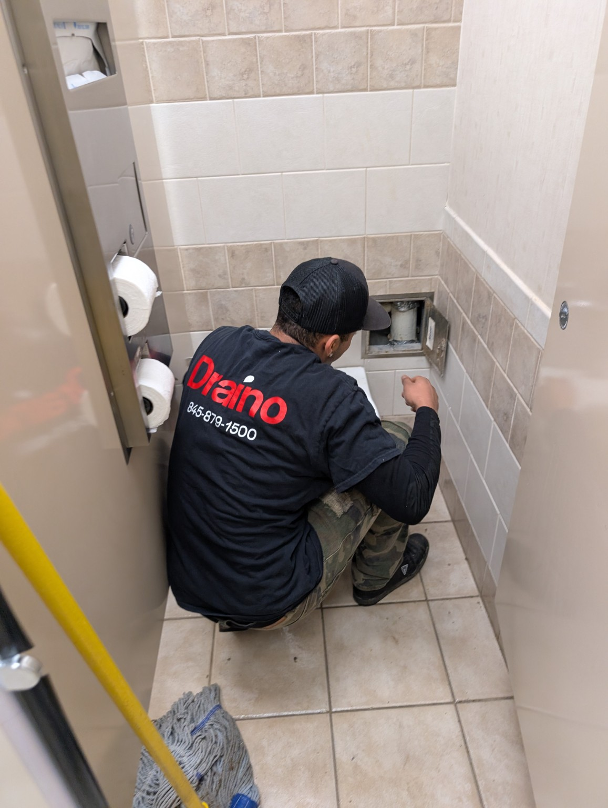
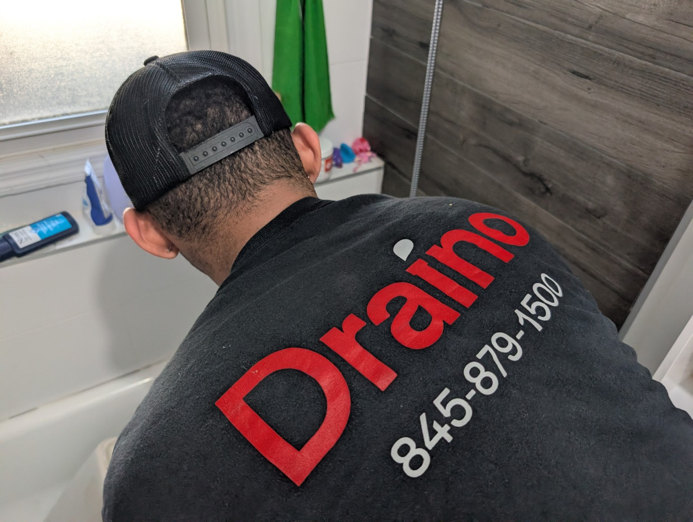
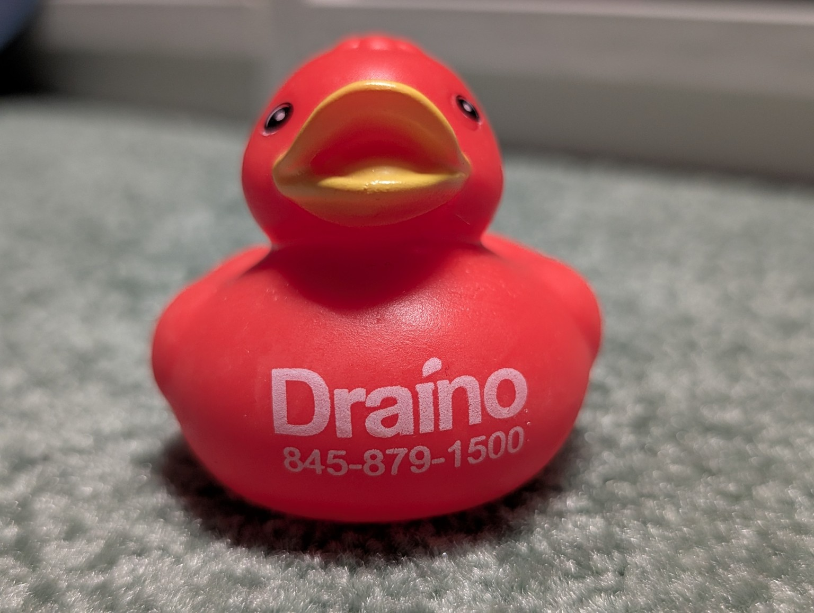
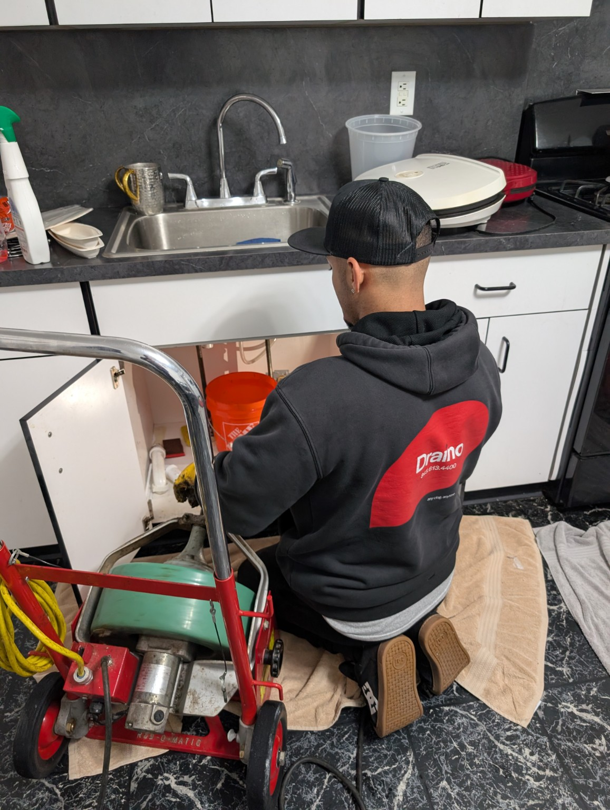
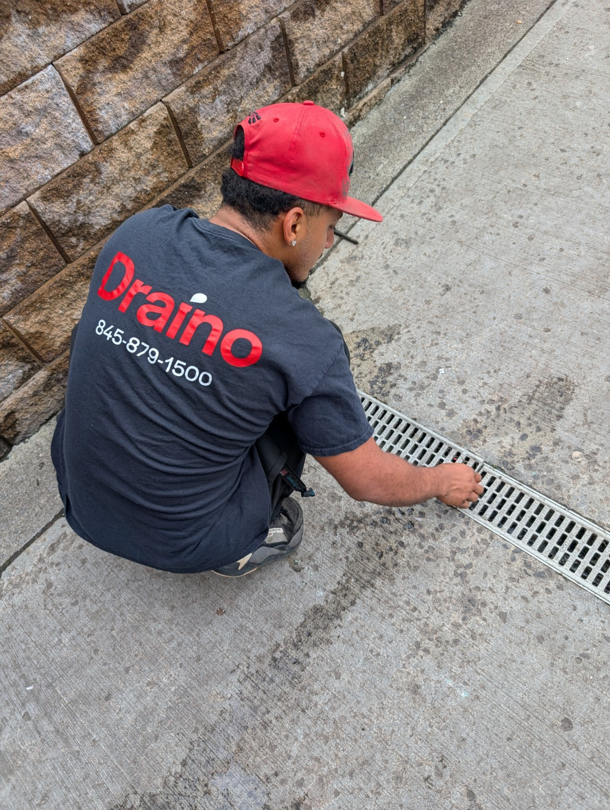
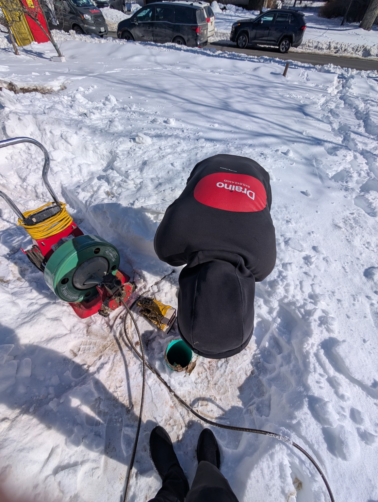
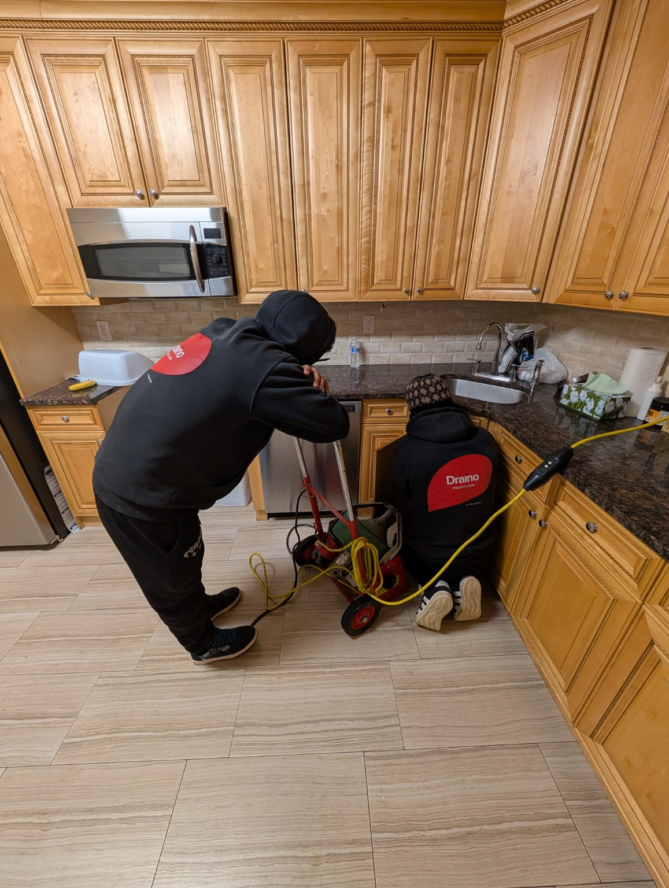
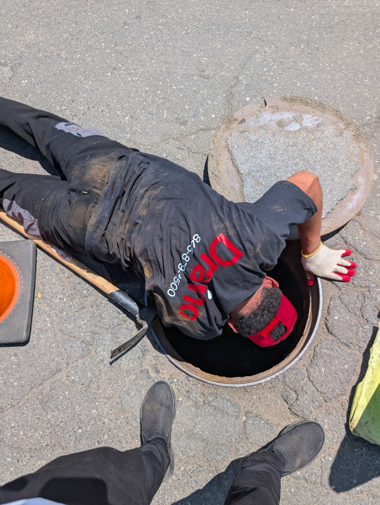
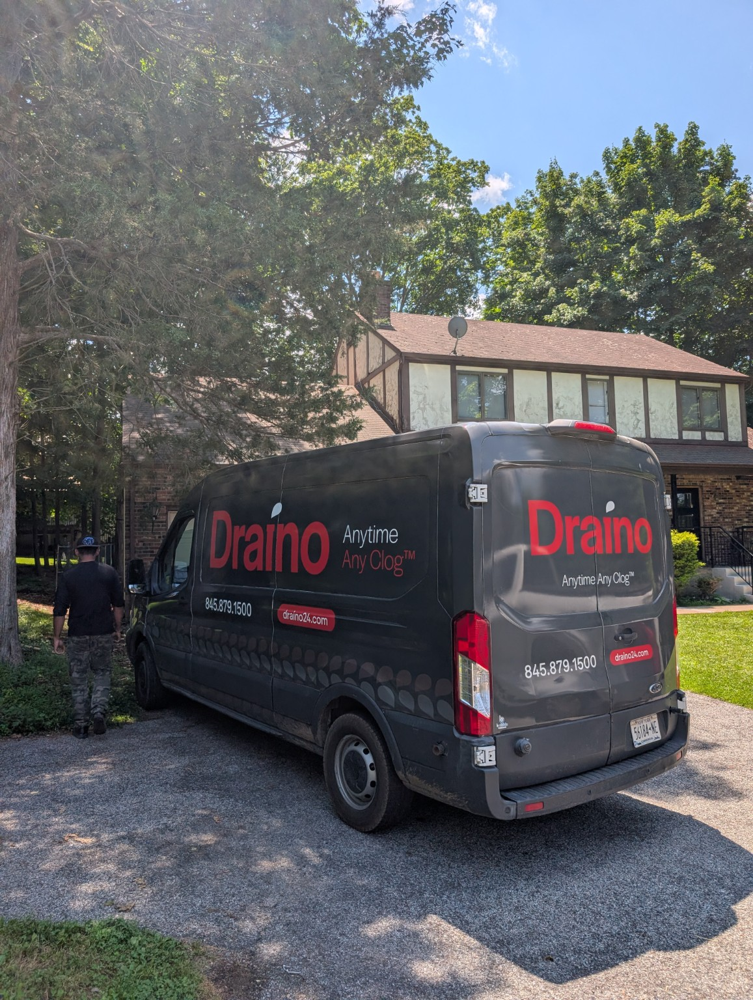
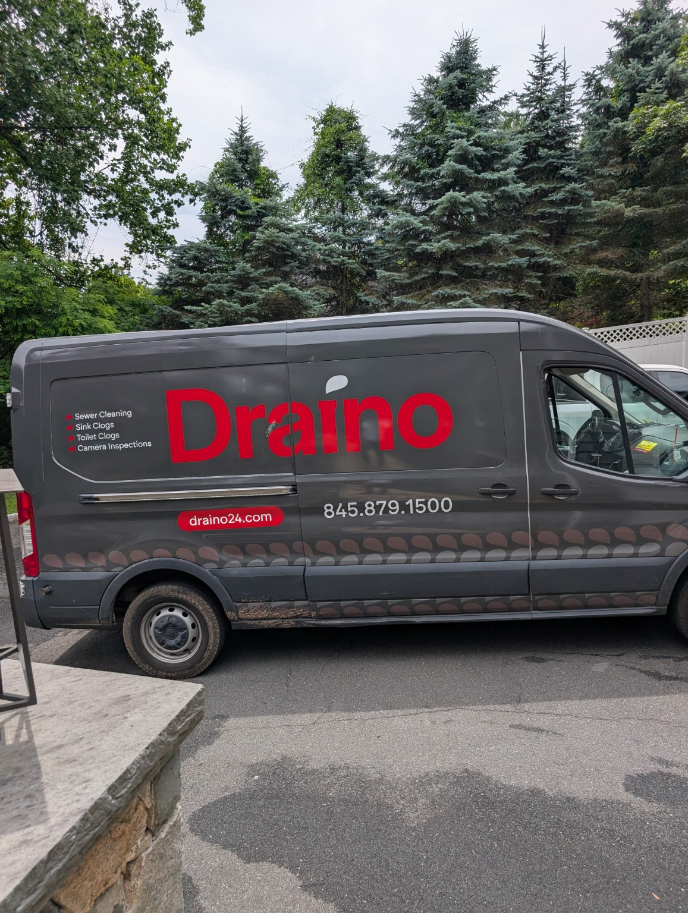

Main Sewer Cleaning
Clear backups affecting toilets, sinks, tubs, floor drains and the whole property.
Main sewer cleaning →Fast, professional help for sewer backups, stubborn drains, outside drainage problems and recurring clogs throughout Rockland County.
We clear the blockage, inspect the line when needed, and recommend the right next step without making the process complicated.
Clear backups affecting toilets, sinks, tubs, floor drains and the whole property.
Main sewer cleaning →High-flow water cleaning for grease, sludge, scale and recurring buildup.
Hydro jetting →Locate roots, breaks, offsets, buildup and repeat blockage points inside the pipe.
Camera inspections →Clear yard, driveway, patio, window-well and exterior drainage lines.
Outside drains →Help for kitchen sinks, bathroom sinks, toilets, tubs and smaller branch lines.
Fixture clogs →Responsive help for stores, offices, apartments, schools and managed properties.
Commercial work →A better look at the kind of work Draino handles across Rockland County — from homes and apartments to outside drains and main sewer lines.

Bathroom drains
Tub & shower lines
Draino details
Kitchen clogs
Outside drains
All-season response
Team on the job
Sewer access points
At your propertyWe focus on sewer and drain problems, bring professional equipment, and explain what we find in plain language.
Open a town page for local drain and sewer information, or view every location we cover.

Draino is nearbyThis section is prepared for a direct Google review feed. Until the live connection is added, customers can open Draino’s Google listing to read the latest reviews.
Choose the fastest option for what you need right now.
Send the problem, location, and photos directly from your phone.
Open WhatsApp →Send your information and start a request for drain or sewer help.
Book online →Use Draino’s secure online payment page for an existing bill.
Pay online →Yes. Draino clears main lines for homes, businesses, apartment buildings and managed properties.
Yes. Jetting may be recommended for grease, sludge, recurring buildup or heavily restricted lines.
Yes. A camera can help identify roots, breaks, offsets, buildup and repeat blockage points.
Yes. We handle yard, driveway, patio, window-well and other exterior drainage lines.